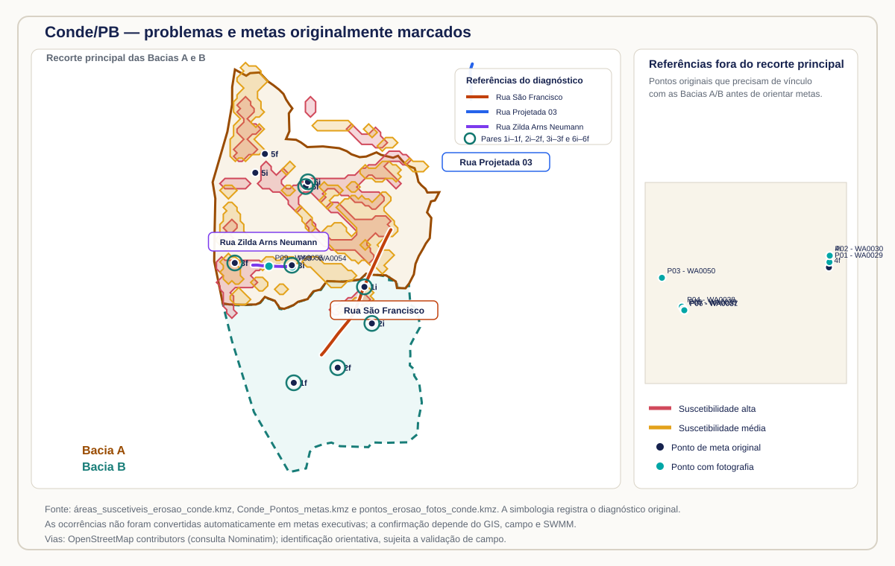

1. Introdução e contextualização
1.0 Preâmbulo e enquadramento
Este relatório apresenta um estudo de caso sobre a concepção preliminar de drenagem urbana em Conde/PB, estruturado a partir de uma abordagem voltada à realidade de diversos municípios brasileiros que ainda carecem de infraestrutura urbana básica, especialmente ruas pavimentadas e sistemas de drenagem. A proposta articula diagnóstico territorial, base topográfica, hidrologia, modelagem hidráulica e priorização de intervenções para apoiar a elaboração de um Plano de Trabalho de Reconstrução.
Em municípios cuja expansão urbana ocorreu sem planejamento suficiente e sem a implantação prévia da infraestrutura essencial, a ocorrência repetida de chuvas — inclusive eventos que não se enquadram como extremos — pode concentrar o escoamento superficial nas vias, intensificar processos erosivos e ampliar progressivamente a exposição de edificações, equipamentos públicos e demais infraestruturas. O dano não decorre apenas da magnitude isolada de uma chuva, mas também da recorrência dos eventos, da ausência de caminhos hidráulicos seguros e da transferência do escoamento para setores situados a jusante.
Quando uma chuva severa produz danos e o município obtém o reconhecimento federal de situação de emergência, podem ser acessados instrumentos de transferência obrigatória, observados os requisitos legais e administrativos aplicáveis. Entretanto, o reconhecimento do desastre não resolve, por si só, a causa estrutural do problema quando essa causa está relacionada à inexistência ou à insuficiência de pavimentação e de drenagem urbana. Nesses casos, a resposta efetiva exige compatibilizar as atribuições da Defesa Civil com políticas públicas e programas específicos destinados à implantação ou à ampliação da infraestrutura urbana.
Esse contexto produz um dilema para a reconstrução. O princípio de reconstruir melhor (build back better; [12]) e os conceitos de infraestrutura resiliente e adaptação climática foram desenvolvidos, em grande parte, para orientar a recuperação de sistemas existentes que foram danificados. Em muitos municípios brasileiros, contudo, não há um sistema de drenagem previamente implantado e destruído que possa simplesmente ser reconstruído: há, antes, uma infraestrutura ausente ou incompleta em áreas que já foram ocupadas. A solução tecnicamente adequada passa, portanto, pela implantação planejada da infraestrutura necessária, sem perder de vista os limites de competência, elegibilidade e disponibilidade orçamentária de cada política pública.
A limitação de recursos da Defesa Civil também precisa ser considerada. Não seria sustentável utilizar, em um único caso de implantação de rede, montante capaz de comprometer ações de resposta e reconstrução mais diretamente aderentes à finalidade do órgão, tampouco seria adequado executar intervenções isoladas que precisassem ser demolidas ou refeitas quando o município obtivesse recursos para implantar o sistema completo. Por outro lado, diante do reconhecimento federal e da demonstração de risco e de infraestrutura afetada, é necessário estruturar uma atuação que reduza o risco imediato e, simultaneamente, evite consolidar soluções incompatíveis com a drenagem futura. Medidas paliativas, como o recascalhamento de vias ou a readequação pontual de bueiros, podem ser necessárias, mas não devem ser confundidas com a solução estruturante do sistema.
Este estudo-piloto propõe um caminho intermediário e integrado: antes de financiar diretamente a implantação de bueiros, galerias ou partes de sistemas de drenagem, realizar a pré-concepção da rede nas sub-bacias onde ocorreram os danos, seu pré-dimensionamento, a identificação dos pontos críticos e a seleção dos trechos prioritários que possam ser executados no âmbito da reconstrução. Esses trechos devem ser concebidos para funcionar como partes de uma rede futura, com continuidade hidráulica, dissipação adequada e possibilidade de ampliação por meio de outras fontes de financiamento. A concepção deve também orientar o município na identificação e no acesso a programas federais e, quando pertinente, a fundos climáticos e instrumentos de cooperação destinados à implantação dos componentes remanescentes. A incorporação, desde a fase preliminar, de critérios de resiliência, adaptação climática, continuidade hidráulica e redução de risco pode qualificar os projetos e fortalecer os pleitos de financiamento, tanto junto a fontes nacionais quanto a fundos climáticos internacionais. Embora essa abordagem não assegure a obtenção de recursos, ela contribui para demonstrar coerência técnica, aderência às políticas públicas e potencial de redução de riscos no médio e longo prazos.
Nessa perspectiva, os trechos apoiados com recursos da Defesa Civil deixam de ser intervenções isoladas e passam a constituir investimentos estratégicos, compatíveis com uma visão de futuro resiliente, sustentável e adaptada à mudança climática. No âmbito desta agenda, o caso de Conde/PB é apresentado como uma primeira iniciativa brasileira estruturada com esse propósito: utilizar a reconstrução como ponto de partida para uma concepção integrada, orientar a contratação dos projetos de engenharia e criar condições para a continuidade da implantação da rede urbana.
1.1 Finalidade
Este relatório organiza a concepção preliminar para instruir a elaboração do Plano de Trabalho de Reconstrução do Município de Conde/PB, com foco na redução de processos erosivos, alagamentos e transferências de risco associados ao escoamento superficial concentrado.
O estudo está organizado em duas unidades territoriais de trabalho, cujas frentes de delimitação, lançamento e organização preliminar foram concluídas:
- Bacia A: unidade de drenagem com rede preliminar de troncos e coletores, nós, dissipadores e áreas de contribuição, com simulação preliminar no SWMM e pré-dimensionamento organizados para a mesma finalidade;
- Bacia B: unidade de drenagem com rede preliminar de troncos e coletores, dois trechos de dissipação e áreas de contribuição, com simulação preliminar no SWMM e pré-dimensionamento organizados para a mesma finalidade.
A conclusão dessas frentes de trabalho significa que as duas bacias estão estruturadas como unidades explícitas de análise; não equivale ao encerramento da validação de campo nem à elaboração dos projetos básico e executivo. Essa distinção será mantida em todos os mapas, arquivos, áreas de contribuição, cenários hidrológicos, resultados hidráulicos e metas administrativas.
1.2 Contextualização do problema
A hipótese de trabalho é que os processos erosivos observados resultam da combinação entre escoamento superficial concentrado, ausência ou insuficiência de pavimentação e ausência ou insuficiência de infraestrutura urbana de drenagem.
A reconstrução não deve apenas repor uma condição vulnerável. O princípio orientador é reconstruir melhor ([12]), em articulação com a redução de riscos e a resiliência preconizadas pelo Marco de Sendai ([11]). Devem ser priorizadas soluções que reduzam o risco futuro, mantenham continuidade hidráulica e protejam os trechos a jusante. Por isso, o escopo preliminar não propõe implantar toda a rede municipal nesta etapa: propõe selecionar troncos principais, coletores indispensáveis e dissipadores nos setores críticos, sempre verificando a bacia contribuinte.
1.3 Registros municipais de ocorrência
O decreto de situação de emergência do município registra a ocorrência de tempestade local/convectiva com chuvas intensas em 1º de maio de 2026. A documentação municipal de referência, produzida em agosto de 2026, detalha que os danos atingiram principalmente vias não pavimentadas, com processos erosivos, alagamentos, enxurradas e isolamento de comunidades. Os registros apresentam, como estimativas preliminares municipais, que 88,3% das vias urbanas não eram pavimentadas, que aproximadamente 495,17 km de vias teriam sido afetados direta ou indiretamente e que 297,11 km já haviam sido catalogados em levantamentos locais. Esses números são apresentados aqui como informação de contexto a ser conferida, não como medição independente deste estudo.
Os registros municipais detalham como ocorrências prioritárias a Rua São Francisco, com trecho de aproximadamente 890 m associado a erosão severa, e a Rua Projetada 03 / Rua Zilda Arns Neumann, com intervenção de drenagem profunda indicada em aproximadamente 510 m. Para as duas ocorrências, relacionam a concentração do escoamento superficial, a diferença de declividade entre montante e jusante, a precariedade do leito viário e a perda de trafegabilidade. Também informam impactos diretos estimados de 1.320 pessoas na primeira ocorrência e 670 na segunda.
Essas informações reforçam a hipótese de que a recuperação viária precisa estar associada à drenagem.
Os registros municipais também indicam lançamento de rede ao final da Rua São Francisco, em área de canavial. Esse ponto deverá ser tratado como saída hidráulica a verificar: é necessário conferir propriedade e uso do solo, condição de jusante, risco de erosão, necessidade de dissipação e eventuais licenças. A indicação municipal não será considerada automaticamente como exutório adequado.
1.4 Mapa de suscetibilidade e rastreabilidade das metas originais
O diagnóstico espacial anterior foi incorporado como evidência de referência para a priorização. O mapa foi construído com base no índice de poder de escoamento do modelo digital de elevação — combinação entre acumulação de fluxo e declividade — e posteriormente confrontado com os registros de erosão observada em campo. As manchas foram classificadas originalmente em suscetibilidade alta e suscetibilidade média. Essa classificação representa propensão do terreno à concentração do escoamento e à formação de processos erosivos; não equivale, isoladamente, a mapa de perigo, risco ou dano.
1.4.1 Formulação do índice de suscetibilidade
O índice utilizado no diagnóstico é um indicador espacial relativo de poder de escoamento. Ele foi concebido para localizar setores em que a água tende a se concentrar e a adquirir maior capacidade de gerar ou intensificar processos erosivos. Não é uma probabilidade de ocorrência, não representa diretamente tensão cisalhante, vazão ou taxa de perda de solo e não substitui um mapa de perigo ou de risco. Sua função, nesta concepção, é apoiar a triagem territorial e a comparação com ocorrências, bacias e rede de drenagem.
Para cada célula x do MDE, foram consideradas duas dimensões físicas complementares: (i) a área de contribuição a montante, que representa o volume potencialmente reunido no caminho de fluxo; e (ii) a declividade local, que representa a componente do relevo associada à aceleração e à energia potencial do escoamento. A área acumulada pode ser expressa por:
em que nu(x) é o número de células que drenam para x e r é o tamanho do pixel. No MDT de trabalho, a grade nominal é de 5 m; essa resolução define o suporte espacial do cálculo, mas não transforma o índice em medição de vazão ou em acurácia vertical equivalente.
A direção de fluxo e a área acumulada são derivadas a partir da vizinhança da grade e do gradiente do MDE, seguindo a lógica de determinação de direções e áreas de contribuição em modelos digitais de elevação descrita por Tarboton ([25]). A declividade local é obtida do gradiente do modelo:
Como a acumulação tem distribuição muito assimétrica, sua transformação logarítmica reduz a dominância de poucos canais ou células com valores extremos. Para colocar as duas variáveis em uma escala comum, a formulação contínua é representada por:
O indicador composto é então:
O produto dá maior destaque aos locais que reúnem, simultaneamente, contribuição de montante e declividade. Assim, uma área extensa e quase plana pode ter baixa expressão no índice, assim como uma encosta íngreme sem contribuição relevante; os valores mais altos tendem a ocorrer onde a concentração do escoamento e a condição de relevo atuam em conjunto. Essa leitura é coerente com o uso de derivados de MDE para reconhecer caminhos de fluxo, mas continua sendo uma aproximação geomorfológica, e não uma simulação hidrológica ou geotécnica ([1], [25]).
A classificação em classes é aplicada sobre o indicador contínuo por dois limiares:
Na camada vetorial legada disponibilizada para este estudo foram preservados os polígonos já classificados — 9 manchas altas e 22 médias —, mas não foram preservados, como metadados independentes, o raster contínuo do índice, o algoritmo exato de tratamento de depressões, a normalização, os limiares τm e τa ou os parâmetros de eventuais filtros. Portanto, os valores numéricos desses limiares são não determinados nesta versão. A formulação acima explicita a lógica para reprodução e auditoria, sem atribuir ao mapa uma precisão que o acervo não permite comprovar.
| Componente | Significado | Uso e limitação |
|---|---|---|
Au | área de contribuição a montante | indica potencial de concentração; não é vazão observada |
S | declividade local do MDE | representa condição geométrica; depende da resolução e do tratamento do relevo |
IPE | produto das variáveis normalizadas | índice relativo de triagem; não é taxa de erosão nem mapa de risco |
τm e τa | limiares de classificação | valores numéricos não determinados no acervo vetorial desta versão |
O cruzamento final foi feito por relação espacial entre os polígonos classificados, os pontos originais e os limites das Bacias A e B. A coincidência direta significa que o ponto está contido em uma mancha; a ausência de coincidência não significa ausência de processo erosivo, porque a ocorrência pode estar fora do limiar cartográfico, em uma feição urbana não representada no MDE ou em uma área cuja contribuição seja alterada por ruas, sarjetas, muros, aterros e galerias. Por isso, a leitura do índice deve ser combinada com o MDT híbrido, as linhas de fluxo, a rede concebida, o SWMM, o diagnóstico de campo e a verificação de jusante.

Figura 1-2 — Mapa interativo de suscetibilidade e rastreabilidade. Use o controle de camadas para alternar entre o mapa de satélite e o mapa de ruas e para visualizar separadamente a suscetibilidade alta e média, a Bacia A, a Bacia B, os pontos originais das metas e os pontos de erosão com fotografias. Use os botões + e −, a roda do mouse ou o gesto de pinça para aproximar e afastar. A classificação de suscetibilidade indica propensão à concentração do escoamento e à erosão; não substitui a validação de campo nem representa, isoladamente, mapa de perigo ou risco.
Na base vetorial original foram identificadas 9 manchas de suscetibilidade alta e 22 manchas de suscetibilidade média, além de duas geometrias associadas a pontos de erosão observados. O cruzamento espacial reproduzível dos pontos originais com as manchas e com os limites revisados das Bacias A e B produziu o seguinte quadro:
| Evidência | Total | Dentro das Bacias A/B | Coincidência direta com suscetibilidade | Leitura para o Plano |
|---|---|---|---|---|
Pontos de metas originais (Conde_Pontos_metas.kmz) |
12 | 10 | 4 | As metas devem ser reavaliadas dentro do recorte; quatro já coincidem diretamente com manchas de suscetibilidade |
| Pontos de erosão com fotografias | 9 | 2 | 2 | P08 e P09 coincidem com área de suscetibilidade média na Bacia A; os demais estão fora do recorte A/B |
Entre as metas originais, as coincidências diretas identificadas são: 3i em suscetibilidade média; 3f em sobreposição de suscetibilidade alta e média; 6i e 6f em suscetibilidade alta. Os pontos 5i e 5f estão dentro da Bacia A, mas fora das manchas originais, devendo ser avaliados pela topografia, pela rede e pela vistoria. Os pontos 1i, 1f, 2f e 2i - foto? estão dentro da Bacia B, mas não coincidem diretamente com as manchas disponíveis; não devem ser descartados, pois a Bacia B agora possui lançamento preliminar e ainda passará pela revisão das áreas de contribuição. Os pontos 4i e 4f estão fora do recorte das Bacias A e B.
Essa distinção é importante: o estudo não deve transformar automaticamente todo ponto originalmente marcado em meta de obra, nem afirmar coincidência quando ela não existe. A evidência será usada em três níveis: (i) coincidência direta com suscetibilidade; (ii) localização dentro das Bacias A/B, exigindo análise de fluxo, rede e campo; e (iii) ocorrência fora do recorte, registrada para tratamento separado.
Os resultados detalhados e reproduzíveis estão disponíveis no arquivo CSV, na camada GeoJSON e no resumo JSON.
1.5 Recorte territorial do estudo e limites das metas
O recorte desta análise compreende exclusivamente as Bacias A e B, que serão tratadas como unidades de drenagem distintas e complementares. Todas as conclusões sobre rede, áreas de contribuição, vazões, dissipadores, pontos críticos e metas do Plano de Trabalho deverão indicar a qual bacia pertencem.
As ocorrências e metas localizadas fora dessas duas bacias não serão incorporadas nesta modelagem. Elas permanecem registradas como evidências do diagnóstico municipal, mas deverão ser analisadas separadamente, com delimitação de sua própria área contribuinte, verificação de infraestrutura existente e, quando necessário, novo modelo hidrológico-hidráulico. Essa separação evita atribuir às Bacias A ou B problemas que não drenam para elas e evita incluir no Plano de Trabalho quantitativos sem relação comprovada com o sistema estudado.
1.6 Objetivos
Objetivo geral
Construir uma base técnica, espacial e hidrológico-hidráulica reproduzível para priorizar intervenções de drenagem nas Bacias A e B e apoiar a elaboração do Plano de Trabalho de Reconstrução.
Objetivos específicos
- Consolidar a base cartográfica em SIRGAS 2000 / UTM zona 25S.
- Documentar a construção do MDT híbrido, suas fontes, limitações e condições de uso.
- Revisar a drenagem natural e o lançamento preliminar de troncos, coletores e saídas.
- Montar o modelo SWMM com áreas de contribuição, chuvas de projeto e dissipadores.
- Identificar trechos prioritários, necessidades de levantamento e metas verificáveis.
- Separar o que é evidência disponível, hipótese de concepção, resultado de simulação e decisão a confirmar.
1.7 Escopo e fases
| Fase | Conteúdo | Situação |
|---|---|---|
| 1 | Base cartográfica, MDT híbrido e revisão das Bacias A e B | Organizada |
| 2 | Lançamento da rede da Bacia A e estrutura inicial do SWMM | Em revisão |
| 3 | Lançamento da rede da Bacia B | Rodada reproduzida e pré-dimensionamento preliminar; revisão topológica em andamento |
| 4 | Áreas reais de contribuição, dissipadores e conexões | Em desenvolvimento nas duas bacias |
| 5 | Chuvas tradicionais e cenários climáticos | Linha de base montada; atualização climática posterior |
| 6 | Análise, metas do Plano de Trabalho e relatório final | Polígonos de metas selecionados; validação hidráulica e de campo pendente |
1.8 Situação territorial das bacias
| Unidade | Situação atual | Próxima decisão |
|---|---|---|
| Bacia A | Rede preliminar, nós, saídas e áreas template disponíveis | Revisar continuidade, trechos, áreas e parâmetros do SWMM |
| Bacia B | Limite revisado; 3 arquivos de tronco, 2 arquivos de coletor, 2 dissipadores, resultados SWMM e pré-dimensionamento preliminar disponíveis | Validar conectividade, áreas, diâmetros, cotas, pontos de saída e o terceiro outfall N_B_0030 |
| A+B | Base híbrida e produtos derivados organizados | Usar como referência territorial conjunta, sem misturar redes não conectadas |
1.9 Rastreabilidade e governança
Cada etapa será mantida com fonte, CRS, data, premissa, limitação e histórico de alteração. O conteúdo publicado é uma minuta técnica pública em construção. Antes de qualquer contratação ou compartilhamento institucional ampliado, devem ser revisados os autores, os dados pessoais, as fotografias, a situação de publicação dos arquivos e a responsabilidade técnica pelos produtos.
O padrão editorial segue a organização visual e documental usada pelo DPM/SEDEC, com identidade institucional, mapas verificáveis, arquivos para download e versionamento no GitHub Pages.